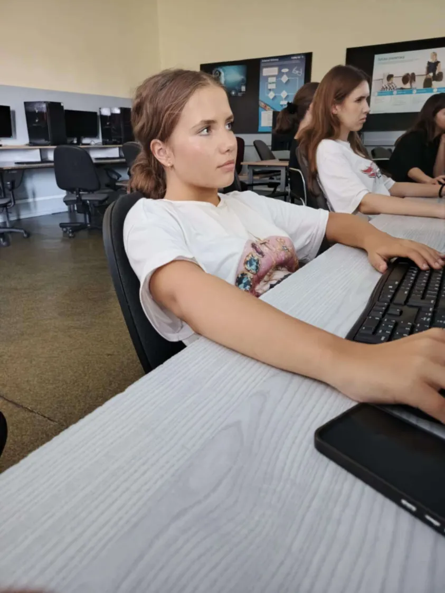
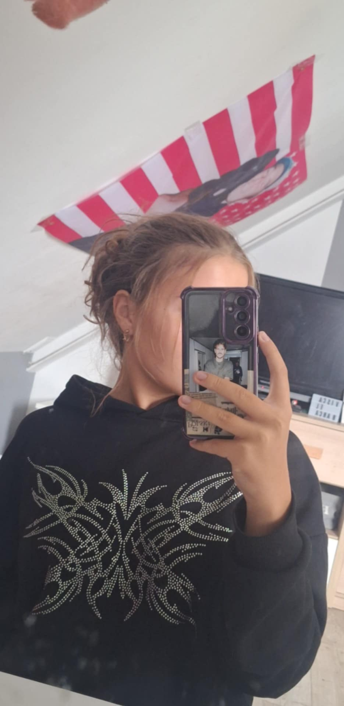
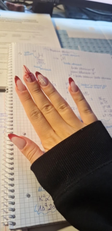
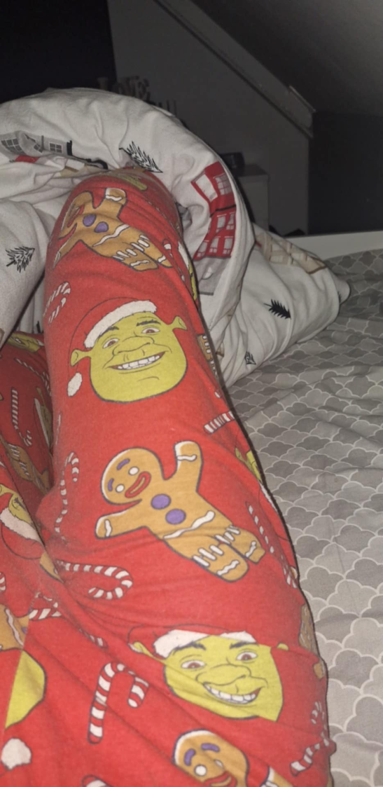
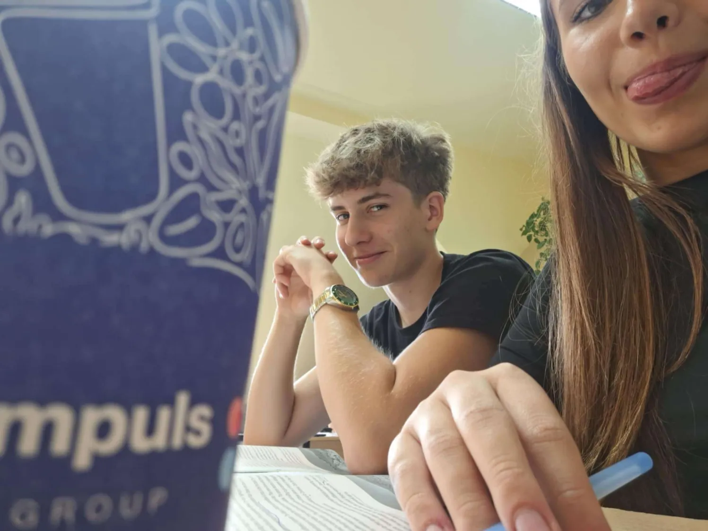
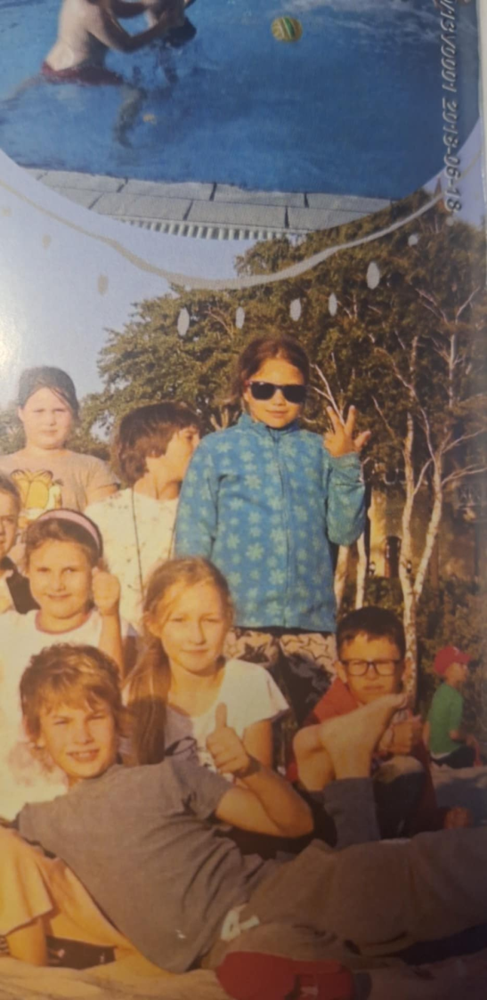
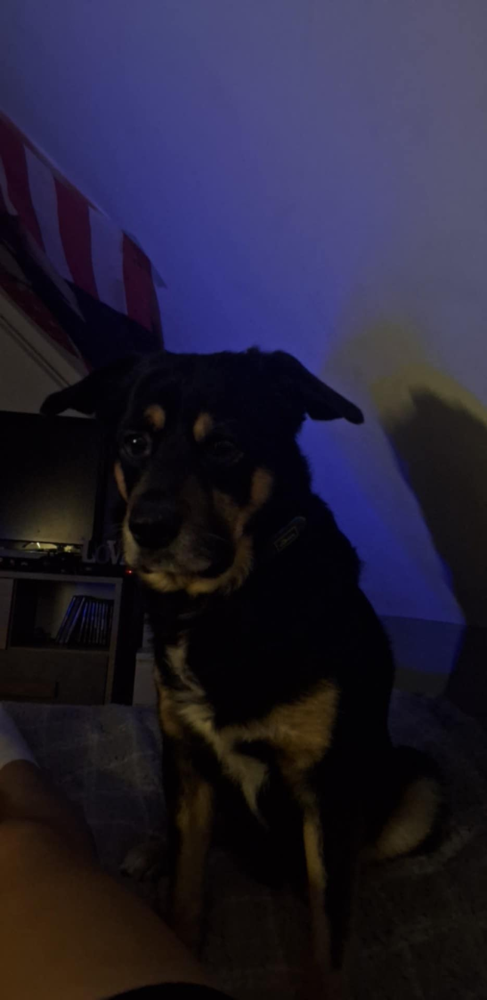

Świąteczna galeria
1 / 21
Zostawię to bez komentarza.
2 / 21

Minimalny poziom skupienia potrzebny na lekcji pani Kupki
3 / 21

Beztwarzowa fanka Taco Hemingwaya, "Twoja skóra pachnie jak ostatnie dni wakacji"
4 / 21
Typowa reakcja na 3 sprawdziany w tygodniu i 5 kartkówek, "it's fine"
5 / 21
POLSKA MIA KHALIFA HELL YEAH!
6 / 21

Damnnn najlepsze świąteczne pazy na świecieee
7 / 21
8 / 21
Kiedy on ma metr 90, jest czarny i starszy.
9 / 21

„Widziałem anioła. Stał przede mną, a świat zamilkł.” – Zstąpienie anioła w Carrefourze.
10 / 21
Przed kartkówką z angielskiego... (tragedia narodowa)
11 / 21
Książka była tak ciekawa, że Olka zasnęła... Na szczęście kot czyta.
12 / 21
Ulalala.. gorąco się zrobiło.
13 / 21

Najlepsza piżama na świecie w świątecznym klimacie
14 / 21
Polska Mia Khalifa spełnia marzenie chorego chłopca i rozmawia z nim na kamerkach
15 / 21

Sneaky zdjecie na angielskim
16 / 21
Zdjęcie z przyszłości - 12 sierpnia 2030 rok
17 / 21

#essa #j***c60
18 / 21

Najcudowniejszy piesek pod słońcem uchwycony na kamerze
19 / 21
Ola - Bizneswoman
20 / 21
21 / 21

Piękna cenzura na pięknym psie
Na co zasługujemy pod choinką
Uważam że pod choinką powinny się znależć takie prezenty owiniętę w kokardkę dla każdego z nas

Nasza passa na TikToku
Mamy już ponad sto dni passy na TikToku! Jestem niezwykle dumny z naszego przyjaciela "Cipka", który każdego dnia płonie dla nas z z zaangażowaniem. Nie możemy pozwolić by ta passja zgasła, musimy dalej dbać o każdy dzień, aby nasza passa trwała ponad rok!
Rysunki z instagrama
Nasze bazgroły z instagrama
Tegoroczny prezent
Słodycze
Kapcie reniferki
Podziękowanie
Twoja przyjaźń jest bezcenna — dziękuję, że jesteś.
— Twój mały świąteczny prezent
Autor: Piotr Rzepa